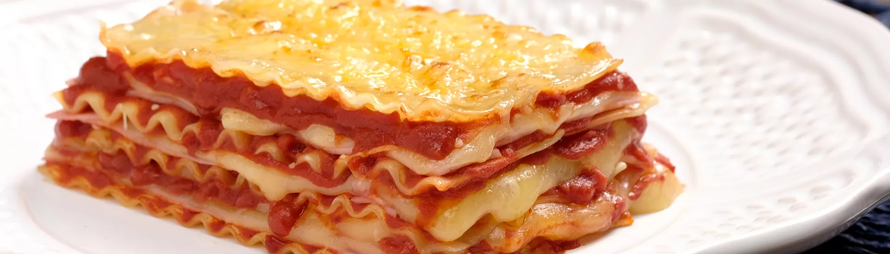

Lasagna Simples

Lasanha ao Molho Sugo, com Queijo e Presunto
Lasanha é um prato simples, criativo e saboroso, de origem italiana. Se tornou muito popular por ser prático e rápido de preparar.
É comumente associado a jantares românticos, acompanhados de um bom vinho.
Ingredientes
- 1/2 pacote (200g) de Lasanha Pré-Cozida
Molho do Sugo
- 1 dente de alho, picado
- 2 latas de tomates pelados picados
- 1 colher de chá, de sal
- 300g de presunto fatiado
- 300g de queijo muçarela fatiado
Preparo
- Para o molho, coloque em uma panela o zeite e o alho picado, deixe dourar. Junte o tomate pelado picado e tempere com sal. Deixe ferver por 10 minutos em fogo baixo.
Montagem
- Em um refratário (20cmx30cm), coloque uma porção de molho, ainda quente, cubra com uma camada de massa, espalhe mais molho, fatias de presunto e queijo muçarela. Repita as camadas até a borda do refratário.
- Finalize com queijo parmesão ralado e leve ao forno preaquecido por cerca de 10 minutos a 200⁰C ou até dourar.